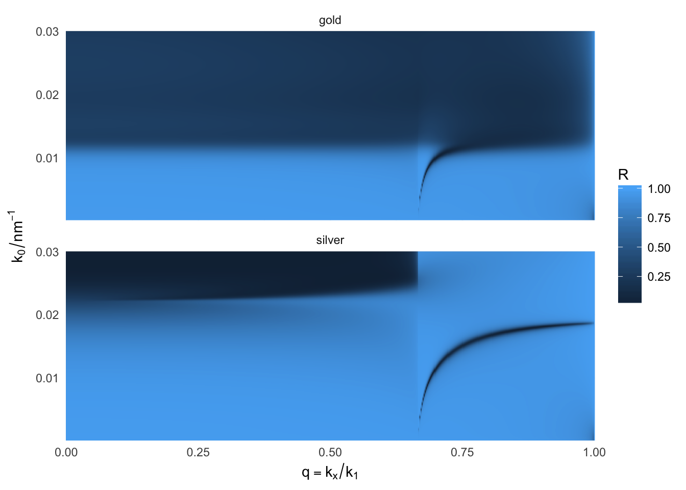

Dispersion of surface plasmon-polaritons
baptiste Auguié
04 March, 2017
SPPs are dispersive waves – their excitation energy varies with the angle of incidence, or, more generally, the in-plane projection of the incident wavevector. We can directly observe this dispersion curve in the reflectivity calculated in the Kretschmann configuration.
Kretschmann configuration
k0 <- seq(1e-4, 3e-2, length=500)
wvl <- 2*pi/k0
silver <- epsAg(wvl)
gold <- epsAu(wvl)
dispersion <- function(material="silver"){
material <- get(material)
res <- recursive_fresnelcpp(k0=k0,
q=seq(0,1, length=500),
epsilon=list(1.5^2, material$epsilon, 1.0),
thickness=c(0, 50, 0),
polarisation='p')
m <- melt(data.frame(k0=res$k0, R=res$R), id=c("k0"))
m$q <- rep(Re(res$q), each=nrow(res$R))
invisible(m)
}
m <- mdply(data.frame(material=c("silver","gold"), stringsAsFactors=FALSE), dispersion)
ggplot(m, aes(q, k0, fill=value)) +
facet_wrap(~material, ncol=1) +
geom_raster() + labs(fill = "R") +
scale_x_continuous(expression(q==k[x] / k[1]), expand=c(0,0))+
scale_y_continuous(expression(k[0]/nm^-1), expand=c(0,0))+
theme_minimal()
Dispersion curve of coupled-SPPs on a thin free standing metal film
Free propagating light cannot couple directly to SPPs, due to the momentum mismatch (SPPs are outside of the light cone). However, a dipole emitter located in the proximity of a metal film may couple via its near-field to evanescent SPPs. Here we plot the squared modulus of the Fresnel reflection coefficient for such a configuration. The values become much greater than 1 when SPPs are excited, because we are approaching a pole in the complex Fresnel coefficient. These values do not contradict the conservation of energy because we are dealing with evanescent waves carrying no energy across the boundary. In the case of a thin film, two SPP modes propagating on either side hybridize and result in two modes (symmetric and antisymmetric charge distributions) with a different energy (long-range SPP vs short-range SPP).
k0 <- seq(1e-4, 2e-2, length=500)
wvl <- 2*pi/k0
silver <- epsAg(wvl)
gold <- epsAu(wvl)
coupled <- function(thickness = 50, material="silver"){
material <- get(material)
res <- recursive_fresnelcpp(k0=k0,
q=seq(1,1.4, length=500),
epsilon=list(1.0, material$epsilon, 1.0),
thickness=c(0, thickness, 0),
polarisation='p')
m <- melt(data.frame(k0=res$k0, R=res$R), id=c("k0"))
m$q <- rep(Re(res$q), each=nrow(res$R))
invisible(m)
}
m <- mdply(data.frame(thickness=c(50, 1000)), coupled)
ggplot(m, aes(q, k0, fill=value)) +
facet_wrap(~thickness, ncol=1) +
geom_raster() + labs(fill = "R") +
scale_x_continuous(expression(q==k[x] / k[1]), expand=c(0,0))+
scale_y_continuous(expression(k[0]/nm^-1), expand=c(0,0))+
theme_minimal()